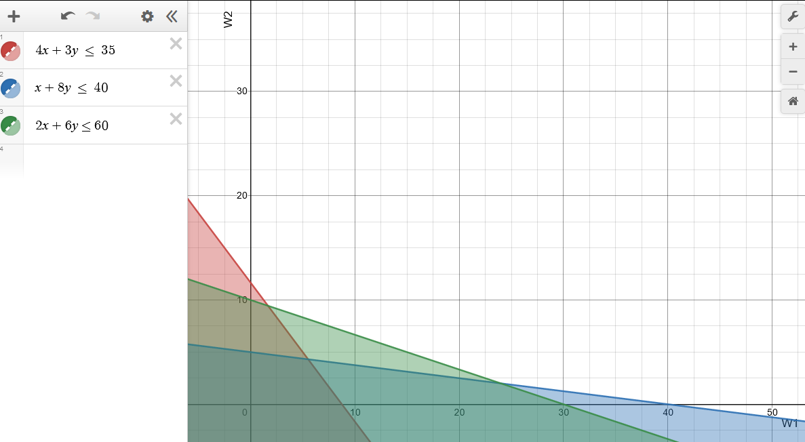
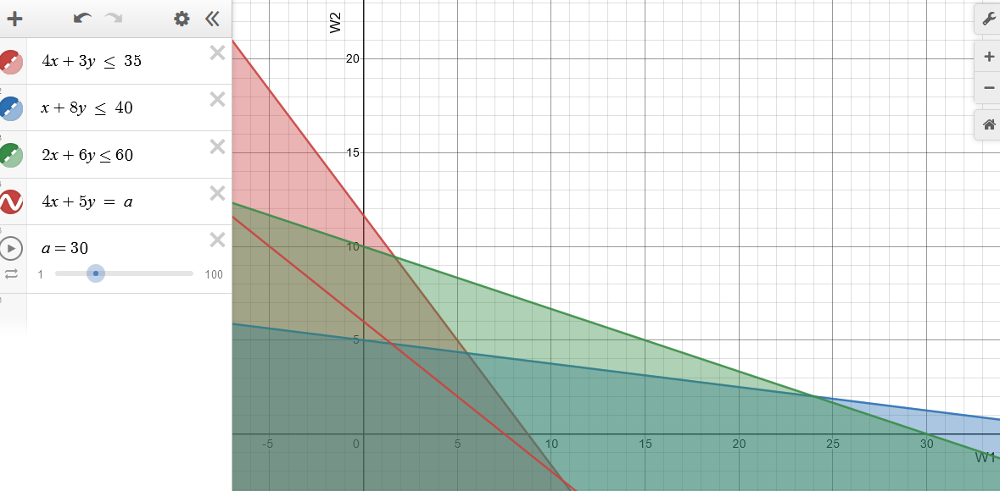
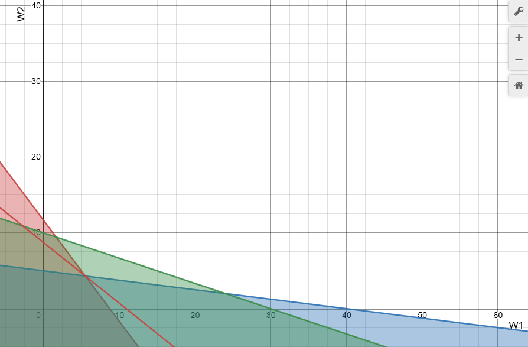
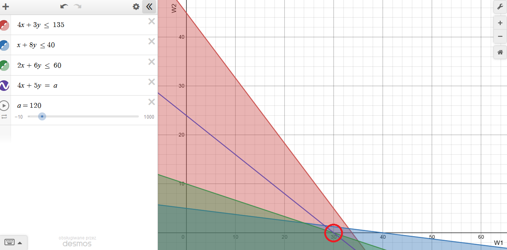
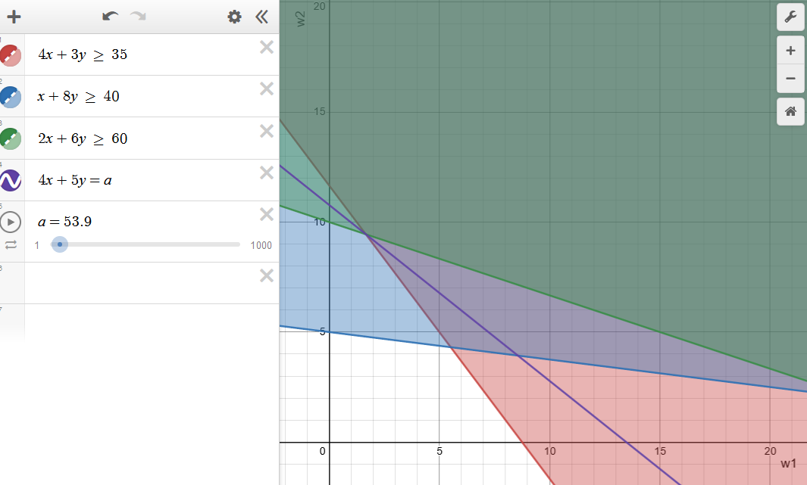

Zakład produkcyjny wytwarza dwa wyroby: W1 i W2. Do ich produkcji są potrzebne maszyny trzech typów: M1, M2 i M3, przy czym każdy wyrób wymaga użycia (kolejno) wszystkich typów maszyn. Czas wytwarzania tysiąca sztuk wyrobu Wi na maszynie typu Mj jest podany w tabeli (w godzinach):
| Wyrób/Maszyna | M1 | M2 | M3 |
|---|---|---|---|
| W1 | 4 | 1 | 2 |
| W2 | 3 | 8 | 6 |
W okresie planowania maszyny M1 są dostępne przez 35, M2 przez 40 i M3 przez 60 godzin. Przewiduje się, że wyroby będą przynosiły zysk jednostkowy c1 = 4 i c2 = 5 (złotych za sztukę). Należy opracować plan produkcji wyrobów W1 i W2 zapewniający największy zysk (wielkość produkcji nie musi być całkowitą wielokrotnością tysięcy sztuk).
A. Sformułować zadanie programowania liniowego ZPL1, którego rozwiązaniem jest szukany plan produkcji.
# Zapis w języku AMPL
var w1 >= 0;
var w2 >= 0;
maximize funkcja_celu:
4*w1 + 5*w2;
subject to ograniczenie1:
4*w1 + 3*w2 <= 35;
subject to ograniczenie2:
1*w1 + 8*w2 <= 40;
subject to ograniczenie3:
2*w1 + 6*w2 <= 60;
B. Rozwiązać zadanie ZPL1:
Obszar rozwiązań dopuszczalnych:

Punkty wierzchołkowe dla ograniczeń:
Punkt optymalny (najdalszy od punktu (0,0)) jest w (2.963,4.63).
Linia stałej wartości funkcji celu dla zysku = 30 (czerwona):

Linia stałej wartości funkcji celu dla zysku = 60 (czerwona) :
Linia stałej wartości funkcji celu dla zysku = 43.62 (czerwona) :

Punkt Q1G = (5.517, 4.31)
Wartość maksymalna funkcji celu: 43.62
ampl: model problem_1.mod;
ampl: solve;
MINOS 5.51: optimal solution found.
2 iterations, objective 43.62068966
ampl: display w1, w2;
w1 = 5.51724
w2 = 4.31034
Q1 = 43.62068966
C. Sprawdzić, czy w przypadku zmiany zysku jednostkowego c1 z 4 zł na 15 zł plan produkcji Q1 wyznaczony w p. B pozostanie nadal rozwiązaniem optymalnym. W przypadku odpowiedzi negatywnej należy podać, jaki plan produkcji Q1C stałby się optymalnym przy danych wartościach c1 i c2 i o ile większy zysk by zapewniał w porównaniu z planem Q1.
Nowy model dla c1 = 15:
var w1 >= 0;
var w2 >= 0;
maximize funkcja_celu:
15*w1 + 5*w2;
subject to ograniczenie1:
4*w1 + 3*w2 <= 35;
subject to ograniczenie2:
1*w1 + 8*w2 <= 40;
subject to ograniczenie3:
2*w1 + 6*w2 <= 60;
Wynik:
ampl: model problem_1c.mod
ampl: solve
ampl? ;
MINOS 5.51: optimal solution found.
1 iterations, objective 131.25
ampl: display w1, w2;
w1 = 8.75
w2 = 0
Odpowiedź: plan produkcji się zmieni, nowy punkt Q1C = (8.75, 0) z zyskiem 131.25. Poprzedni punkt Q1 = (5.51724, 4.31034) przyniósłby mniejszy zysk równy 104.3103. Różnica w zyskach wynosi 26.9397.
Dla każdego typu maszyn wyznaczyć eksperymentalnie dodatkowy zysk (w stosunku do osiąganego przy planie Q1), jaki można by uzyskać za dodatkową godzinę pracy maszyn typu . Zwiększyć o 100 godzin dostępność maszyny zapewniającej największy dodatkowy zysk, wyznaczyć rozwiązanie optymalne w tym przypadku, na wykresie zakreskować obszar rozwiązań dopuszczalnych oraz zaznaczyć znalezione rozwiązanie optymalne. Jak zmienił się maksymalny zysk w porównaniu do zysku dla planu Q1?
Dla maszyny M1:
var w1 >= 0;
var w2 >= 0;
maximize funkcja_celu:
4*w1 + 5*w2;
subject to ograniczenie1:
4*w1 + 3*w2 <= 36; # dodana 1 godzina do M1
subject to ograniczenie2:
1*w1 + 8*w2 <= 40;
subject to ograniczenie3:
2*w1 + 6*w2 <= 60;
Dla maszyny M2:
var w1 >= 0;
var w2 >= 0;
maximize funkcja_celu:
4*w1 + 5*w2;
subject to ograniczenie1:
4*w1 + 3*w2 <= 35;
subject to ograniczenie2:
1*w1 + 8*w2 <= 41; # dodana 1 godzina do M2
subject to ograniczenie3:
2*w1 + 6*w2 <= 60;
Dla maszyny M3:
var w1 >= 0;
var w2 >= 0;
maximize funkcja_celu:
4*w1 + 5*w2;
subject to ograniczenie1:
4*w1 + 3*w2 <= 35;
subject to ograniczenie2:
1*w1 + 8*w2 <= 40;
subject to ograniczenie3:
2*w1 + 6*w2 <= 61; # dodana 1 godzina do M3
Wyniki:
Q1D1 = 44.5517241
Delta_1 = 44.5517241 - 43.62068966 = 0.93103444
Q1D2 = 43.89655172
Delta_2 = 43.89655172 - 43.62068966 = 0.27586206
Q1D3 = 43.62068966
Delta_3 = 43.62068966 - 43.62068966 = 0
Zatem dodanie pojedynczej godziny do maszyny M1 daje największy zysk.
Rozwiązania dla maszyny M1 z dodatkowymi 100 godzinami.
var w1 >= 0;
var w2 >= 0;
maximize funkcja_celu:
4*w1 + 5*w2;
subject to ograniczenie1:
4*w1 + 3*w2 <= 135; # dodane 100 godzin do M1
subject to ograniczenie2:
1*w1 + 8*w2 <= 40;
subject to ograniczenie3:
2*w1 + 6*w2 <= 60;
Wynik: zysk 120, dla punktu (30, 0).
Rysunek (ograniczenie 1 - czerwone, ograniczenie 2 - niebieskie, ograniczenie 3 - zielone, linia kosztów dla zysku = 120 - fioletowa, punkt optimum - czerwone kółko):

Problem 2 jest podobny do Problemu 1, z tym że dotyczy produkowania czterech różnych wyrobów. Doszła możliwość produkowania na tych samych maszynach przy tym samym czasie ich pracy dodatkowych wyrobów W3 i W4 (oprócz wyrobów W1 i W2); wyroby W3 i W4 będą przynosiły zysk jednostkowy c3 = 6 i c4 = 5 (złotych za sztukę). Czas wytwarzania partii tysiąca sztuk wyrobów W3 i W4 jest następujący (w
godzinach):
| Wyrób/Maszyna | M1 | M2 | M3 |
|---|---|---|---|
| W3 | 3 | 8 | 6 |
| W4 | 1 | 4 | 6 |
Należy opracować plan produkcji Q2 czterech wyrobów W1, W2, W3 i W4 zapewniający największy zysk, posługując się modelem utworzonym w AMPL. Wyznaczony plan Q2 i odpowiadającą mu wartość funkcji celu porównać z planem optymalnym Q1 dla Problemu 1 sprawdzając, czy zysk całkowity zmniejszył się czy zwiększył, czy wyroby W3 i W4 zostały włączone do planu produkcji Q2 i czy charakter zmian zysku jest logicznie uzasadniony.
Model:
var w1 >= 0;
var w2 >= 0;
var w3 >= 0;
var w4 >= 0;
maximize funkcja_celu:
4*w1 + 5*w2 + 6*w3 + 5*w4;
subject to ograniczenie1:
4*w1 + 3*w2 + 3*w3 + 1*w4 <= 35;
subject to ograniczenie2:
1*w1 + 8*w2 + 8*w3 + 4*w4 <= 40;
subject to ograniczenie3:
2*w1 + 6*w2 + 6*w3 + 6*w4 <= 60;
Wynik:
ampl: model problem_2.mod
ampl: solve;
MINOS 5.51: optimal solution found.
3 iterations, objective 65.90909091
ampl: display w1,w2,w3,w4;
w1 = 6.81818
w2 = 0
w3 = 0
w4 = 7.72727
Zysk całkowity: Q2 = 65.90909091 dla produkcji (6.81818, 0, 0, 7.72727). W porównaniu do Q1 = 43.62068966 dodatkowy zysk jest równy 22.28840125.
Zysk całkowity w oczywisty sposób się zwiększył - nie mógł się zmniejszyć, mógł co najwyżej być ten sam dla w3 = 0, w4 = 0. Należy usunąć wyrób w2 oraz dodać wyrób w4 do produkcji.
Sformułować zadanie programowania matematycznego (ZPL3) dla Problemu różniącego się od Problemu 1 w następujący sposób:
Na rysunku wykonanym w p. B 1 zaznaczyć obszar rozwiązań dopuszczalnych zadania 3 i w oparciu o wyznaczony kierunek wzrostu wartości funkcji celu wskazać punkt Q3g będący rozwiązaniem optymalnym zadania 3. Rozwiązać zadanie ZPL3 posługując się modelem utworzonym w AMPL i porównać otrzymane rozwiązanie optymalne Q3 z rozwiązaniem Q3g.
Nowy model zadania:
var w1 >= 0;
var w2 >= 0;
minimize funkcja_celu:
4*w1 + 5*w2;
subject to ograniczenie1:
4*w1 + 3*w2 >= 35;
subject to ograniczenie2:
1*w1 + 8*w2 >= 40;
subject to ograniczenie3:
2*w1 + 6*w2 >= 60;
Rysunek poglądowy (ograniczenie 1: czerwony, ograniczenie 2: niebieski, ograniczenie 3: zielony, linia kosztów: fioletowa):

Wyznaczony graficznie punkt optymalny kosztów ma wartość Q3G = 53.9 dla punktu (1.667, 9.444).
Wyznaczony numerycznie punkt optymalny kosztów:
ampl: model problem_3.mod;
ampl: solve;
MINOS 5.51: optimal solution found.
1 iterations, objective 53.88888889
ampl: display w1, w2;
w1 = 1.66667
w2 = 9.44444
Wynik to Q3 = 53.89 dla punktu (1.67, 9.44).